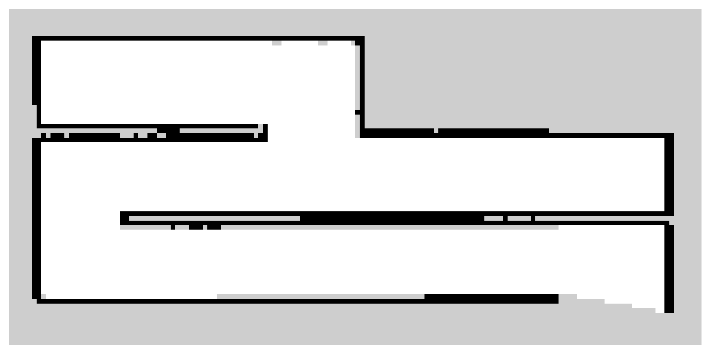
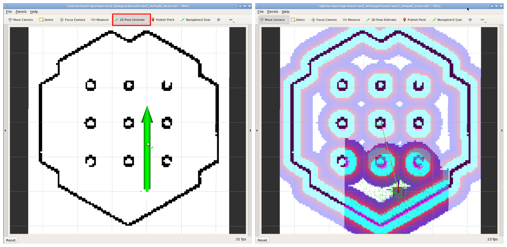

ROS2 SLAM
Referência: ROS2 SLAM
SLAM (Simultaneous Localization and Mapping) ou Mapeamento e Localização Simultâneos é uma técnica usada por robôs e veículos autônomos para construir um mapa do ambiente e, ao mesmo tempo, localizar sua posição nesse ambiente. A ROS2 oferece uma série de pacotes que permitem a execução de algoritmos de SLAM no Turtlebot3.
Veja o vídeo abaixo de demonstração do SLAM no Turtlebot3:
Preparação
Antes de começar, siga a checagem da infraestrutura e mantenha os nós de sensores e odometria do robô em execução. Você precisará dos pacotes turtlebot3_cartographer, turtlebot3_navigation2 e nav2_map_server.
Os comandos abaixo usam o robô real, com use_sim_time:=False. Para testar no Gazebo, use use_sim_time:=True em todos os nós envolvidos. Não misture os dois relógios na mesma execução.
Executando o Mapeamento
Para iniciar o mapeamento do ambiente, devemos executar o pacote denominado Cartographer. Para isso, execute os comandos abaixo:
ros2 launch turtlebot3_cartographer cartographer.launch.py use_sim_time:=False
Agora, abra um novo terminal com o teleop para controlar o Turtlebot3:
ros2 run turtlebot3_teleop teleop_keyboard
Com o teleop aberto, movimente o Turtlebot3 pelo ambiente para que o mapeamento seja realizado. Após finalizar o mapeamento, execute o comando abaixo para salvar o mapa:
ros2 run nav2_map_server map_saver_cli -f ~/map --ros-args -p use_sim_time:=False
Os arquivos serão salvos como ~/map.pgm e ~/map.yaml. O YAML informa, entre outros parâmetros, a resolução em metros por célula e a origem do mapa. Guarde os dois arquivos juntos.
Visualizando o Mapa
O mapa será salvo como um arquivo de imagem no formato pgm. Como no exemplo abaixo:

O mapa ilustra o ambiente mapeado, onde os pixels pretos representam obstáculos, os pixels brancos representam áreas livres e os pixels cinzas representam áreas desconhecidas.
Navegando no Mapa
Para navegar em um mapa salvo, encerre a teleoperação e o Cartographer, mas mantenha os nós do robô e de seus sensores em execução. Inicie o Nav2 com o mapa salvo:
ros2 launch turtlebot3_navigation2 navigation2.launch.py use_sim_time:=False map:=$HOME/map.yaml
Uma vez que o pacote de navegação esteja em execução, vamos primeiro definir a posição inicial do Turtlebot3 no mapa, para isso, clique no botão 2D Pose Estimate no Rviz e clique e segure o botão esquerdo do mouse no local onde o Turtlebot3 está localizado no mapa. Em seguida, arraste o mouse para a direção que o Turtlebot3 está apontando e solte o botão esquerdo do mouse, conforme ilustrado na imagem abaixo:

Definindo o Ponto de Destino da Navegação
Agora, para definir o ponto de destino da navegação, clique no botão 2D Nav Goal no Rviz e clique e segure o botão esquerdo do mouse no local onde deseja que o Turtlebot3 vá. Em seguida, arraste o mouse para a direção que deseja que o Turtlebot3 esteja apontando e solte o botão esquerdo do mouse.
Navegação enquanto o mapa é construído
No labirinto desconhecido do projeto, o Cartographer deve continuar em execução para atualizar o mapa e a localização. Seu programa pode ler o tópico /map (nav_msgs/msg/OccupancyGrid), escolher destinos e conduzir o robô usando essa informação.
Para combinar o Cartographer com o Nav2 na infraestrutura da disciplina, execute os comandos abaixo, cada um em um terminal diferente:
ros2 launch turtlebot3_cartographer cartographer.launch.py use_sim_time:=False
ros2 launch turtlebot3_navigation2 navigation2.launch.py use_sim_time:=False \
map:='topic://map'
Na APS 8, o mapeamento pode ser feito somente com Cartographer e teleoperação. A escolha autônoma dos destinos de exploração será necessária no projeto.
Extraindo a posição do robô no mapa
Quando usamos o sistema de navegação, o tópico /odom sozinho não é suficiente para obter a posição do robô no mapa. Isso acontece porque /odom representa a pose do robô em um sistema de coordenadas local, associado ao frame odom.
Para obter a posição global do robô no mapa, precisamos combinar a odometria com as transformações publicadas no tópico /tf. Em especial, usamos a transformação entre os frames map e odom, junto com a pose do robô em relação ao frame odom.
De forma simplificada, a composição é:
map -> odom -> base_link
Assim, conseguimos estimar a pose do robô no frame map, ou seja:
x, y, yaw no mapa
O arquivo didático amcl.py compõe a transformação map -> odom com a odometria para publicar essa pose. Apesar do nome da classe AMCL, ele não implementa o algoritmo de localização AMCL: é um nó auxiliar de leitura da pose.
Ao navegar com um mapa salvo, o AMCL do Nav2 já publica /amcl_pose; nesse caso, use esse tópico diretamente e não execute o auxiliar no mesmo tópico.
Durante o SLAM, se precisar do auxiliar, execute-o como um nó independente, remapeando a publicação para evitar confusão com o AMCL do Nav2:
python3 amcl.py --ros-args -r /amcl_pose:=/map_pose -p use_sim_time:=False
Baixe o arquivo e execute o comando na pasta em que ele foi salvo. Configure seu subscriber para /map_pose. O publisher do auxiliar é VOLATILE; o subscriber também deve usar durabilidade VOLATILE. Diferentemente da classe Odom, esse auxiliar não deve ser usado como uma classe de herança do controlador. A covariância publicada pelo auxiliar contém valores fixos de exemplo, não uma estimativa de incerteza.
Os tópicos /amcl_pose (AMCL do Nav2) e /map_pose (auxiliar remapeado) usam o tipo:
geometry_msgs/msg/PoseWithCovarianceStamped
Nessas mensagens:
pose.pose.position.xrepresenta a posição do robô no eixo X do mapa (metros);pose.pose.position.yrepresenta a posição do robô no eixo Y do mapa (metros);pose.pose.orientationrepresenta a orientação do robô no mapa.